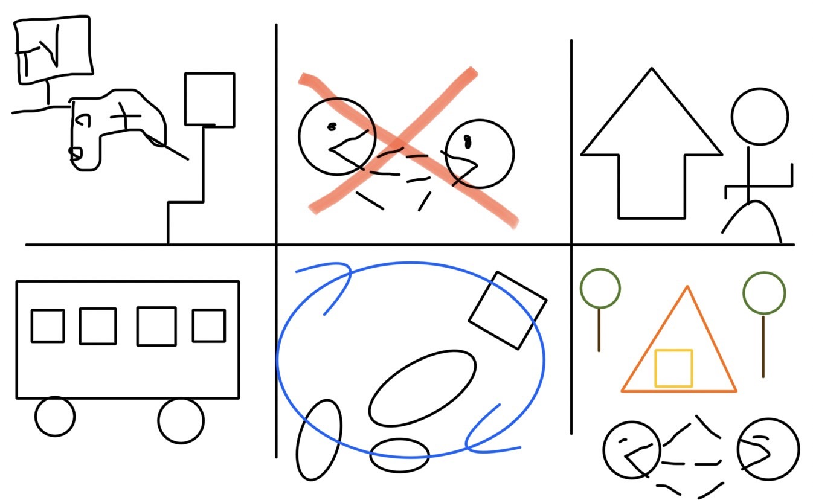

デザイン演習Ⅴ 夏休み課題
世の中に対する課題の発見(イラスト)

世の中に対する課題の発見(記述)
TVやゲームが身近になり、外に出なくなった若者たちが増えたことで、
自然との触れ合いや、心からの友達を作ることが難しくなってきたことを課題として発見した。
また、世界中を回ってみて、自分の目で見て、肌で感じることの重要さも知った。
そこで、アメリカのスクールバスのような大きなバスを使い、
高校生・大学生を対象に観光コース等のプランを提供し、
日本各地を回るバスをビジネスとして運用することを考えた。
バスの内装はキャンピングカーのように工事する。
そして、観光地も周りつつ、自分たちでテントを建て、野外炊事も行い、
自然と触れ合うこともプランの中に入れる。
そうして人や自然と触れ合うことを大切にし、それを参加した人たちが地元に持ち帰り、
小学生を対象にキャンプや遊びの会を行う少年団のような活動のリーダーを育て、
各地で自然教室を様々な年代とできるように展開していく。